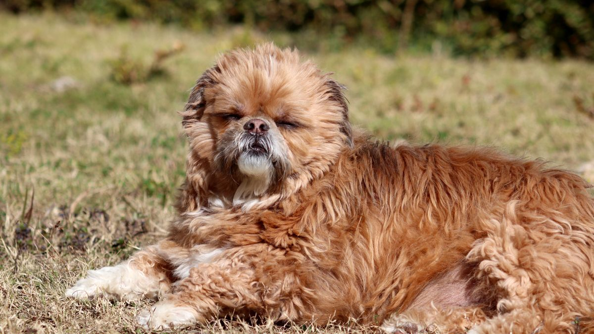

더운 날 산책 후 발을 들지 않음
7월 오후 2시, 평소 15분 산책을 마친 소형견이 현관 앞에서 발을 들고 서 있었습니다. 그날은 평소와 같은 코스·같은 시간이었고, 보호자는 '오늘도 잘 걸었다'고 생각했습니다. 발바닥을 보니 붉은기가 있었고, 집에 들어온 뒤 30분 헥헥거림이 이어졌습니다.
이 글은 더위·한파·비 날 산책을 갈지·줄일지·실내로 바꿀지 정하는 기준을 다룹니다. 집 안 온도·환기는 계절 점검 글, 산책 기본 패턴은 산책 루틴 글을 먼저 보세요.
더위·폭염일 때
아스팔트 테스트: 손등을 바닥에 5초 대었을 때 뜨겁으면 산책을 미루거나 5분 이내로 줄입니다. 개 발바닥은 우리 신발보다 훨씬 민감합니다.
시간대: 여름은 오전 7~9시·저녁 7시 이후를 우선합니다. 한낮 12~3시는 그늘만 있어도 열사병 위험이 큽니다.
호흡·헥헥: 산책 중 헥헥거림이 평소보다 빠르거나 혀가 길게 늘어지면 즉시 그늘로 이동하고, 2분 안에 가라앉지 않으면 집으로 돌아옵니다.
짧은 코·평소 호흡이 무거운 개체, 노견·어린 개체는 평소보다 5분 일찍 돌아오는 기준을 씁니다. 물은 산책 전·중(그늘에서 1~2모금)·후에 준비하세요.
한파·추울 때
체감 -5℃ 이하 또는 바람이 강한 날은 시간을 반으로 줄이거나 실내 전환을 검토합니다. 발이 들리거나 몸을 움츠리면 오늘은 5분만 하고 돌아오세요.

눈·얼음길은 미끄럼 사고가 많습니다. 평지·잔디·복도 위주로 바꾸고, 산책 후 발 닦기는 산책 후 발 관리 글처럼 2~3분으로 늘립니다. 염화칼슘·제설제가 묻으면 물로 헹군 뒤 말려 주세요.
옷을 입히는 개체도 '옷=무조건 따뜻'이 아닙니다. 실내에서 과열·습기가 차면 피부 자극이 생길 수 있어, 귀가 후 옷을 벗기고 털을 말려 주는 집이 많습니다.
비·습도·미세먼지
비: 소나기가 짧으면 10분 우산 산책+발 닦기도 가능합니다. 장마·천둥·강풍이면 실내 전환이 낫습니다. 비 맞은 후 귀·발·배 털이 젖은 채로 방치되면 피부 문제로 이어질 수 있습니다.
습도 80% 이상: 호흡이 무거운 개체는 산책 시간을 줄이고, 그늘·물 휴식을 늘립니다.
미세먼지·오존 경보: 실외 산책을 쉬고 복도·계단 왕복 5~10분(미니 산책)으로 대체하세요. '오늘 0분'보다 '실내 10분'이 루틴 유지에 유리한 경우가 많습니다.
고양이는 비 오는 날 실외 산책이 거의 없습니다. 화장실·캣타워·창가 시야만으로도 자극이 줄어들 수 있어, 억지로 산책할 필요는 없습니다.
실내 전환 루틴
실외 산책을 쉬는 날에도 같은 시간대에 10~15분 활동을 넣으면 배변·수면 예측이 쉬워집니다.
- 5분: 복도·계단 왕복 또는 창가 냄새 탐색
- 5분: 수건·컵에 간식 숨기기, 낮은 속도로 던지기
- 5분: 씹기 장난감·필러놀이(과흥분 시 중단)
자세한 놀이 예시는 실내 놀이 글을 참고하세요. 실내 전환은 '운동 부족'이 아니라 '오늘의 날씨 대응'으로 기록하면, 다음 날 산책 조절이 쉬워집니다.
산책 일지에 '날씨·분·호흡·발 상태' 4가지만 적으면, 2주 뒤 우리 집 기준 온도·시간대가 보입니다.
현장에서
날씨 조절은 거리표를 버리고 오늘의 분 수로 생각하는 편이 낫습니다. 평소 15분이면 더운 날 7분, 비 오는 날 0분+실내 10분도 같은 날의 성공입니다.
아침에 날씨 앱을 보고 '오늘 산책 A안(실외)·B안(실내)'을 미리 정해 두면, 현관 앞에서 망설이는 시간이 줄어듭니다.
폭염 주간에는 그늘 코스를 미리 정하세요. 나무 그늘·건물 북쪽 면·아침·저녁 시간대가 우선입니다.
한파 주간에는 발바닥·귀·꼬리 끝을 산책 후 30초만 봐도 동상 의심을 일찍 잡을 수 있습니다.
장마철에는 발·귀·배 털 건조를 귀가 루틴에 넣으세요. 헤어드라이어는 약풍·멀리, 수건 두드리기만으로도 충분한 경우가 많습니다.
가족이 번갈아 산책하면 카톡에 '오늘 A안/B안·분'을 한 줄 남기세요. 같은 날 두 번 20분 실외는 피로만 쌓일 수 있습니다.
이번 주 날씨 산책 체크리스트입니다. 항목 3개만 골라 쓰세요.
- 아스팔트 손등 5초 테스트 후 산책 시간을 정했습니다.
- 더운 날 오전·저녁 시간대를 우선했습니다.
- 헥헥·발 들기 시 즉시 단축·귀가했습니다.
- 비·경보 날 실내 10~15분 전환 루틴을 썼습니다.
- 산책 후 발·귀·배 털을 닦고 말렸습니다.
- 날씨·분·호흡·발 상태를 일지에 적었습니다.
- 실내 전환 날도 산책과 같은 시간대에 활동했습니다.
- 염화칼슘·제설제 묻은 발은 물로 헹궜습니다.
날씨 때문에 산책을 줄인 날은 실패가 아닙니다. 내일 평소 분으로 돌아가면 됩니다.
폭염·한파·장마는 매년 반복되므로, 작년 이맘때 일지 한 줄만 찾아도 올해 기준이 빨리 잡힙니다.
적용 전에
비 오는 날 0분을 '게을름'으로 느끼는 보호자를 봅니다. 실내 10분이면 그날의 리듬은 유지되는 경우가 많습니다.
적용 전에 내일 아침 날씨를 보고 A안·B안만 정해 보세요. 현관에서 결정하지 않아도 됩니다.
호흡·발 상태가 48시간 이상 다르면 메모를 들고 상담을 검토하세요. 이 글은 응급 판단을 대체하지 않습니다.
초보자가 자주 실수하는 포인트
- 폭염에도 평소와 같은 오후 산책
- 아스팔트 뜨거운데 거리만 유지
- 비 맞은 후 발·귀 건조 생략
- 실내 전환 없이 하루 0분 활동
- 헥헥 지속인데 산책 계속하기
체크리스트
- 손등 5초 아스팔트 테스트
- 더위·한파 시간 반토막
- 비·경보 날 실내 10분
- 산책 후 발·귀 건조
- 날씨·분 일지 기록
자주 묻는 질문
- seasonal-home-check 글과 무엇이 다른가요?
- 계절 점검은 집 안 온도·환기·필터·침구를 다룹니다. 이 글은 실외 산책을 갈지·줄일지·실내로 바꿀지에 대한 판단 기준을 다룹니다.
- 실내 전환만 3일 연속해도 괜찮나요?
- 장마·폭염처럼 날씨가 이어지면 실내 10~15분을 같은 시간대에 반복해도 됩니다. 날씨가 나아지면 평소 분의 절반부터 다시 시작하세요.
- 고양이도 같은 기준을 쓰나요?
- 실외 산책이 없는 고양이는 비·폭염 날 창가·캣타워·화장실 접근만 확인하면 됩니다. 억지로 산책할 필요는 없습니다.
이 글은 초보자 기준으로 이해하기 쉽게 정리되었으며, 내용은 운영 과정에서 순차적으로 보완될 수 있습니다. 수의사 등 전문가의 진단·처치를 대체하지 않습니다.